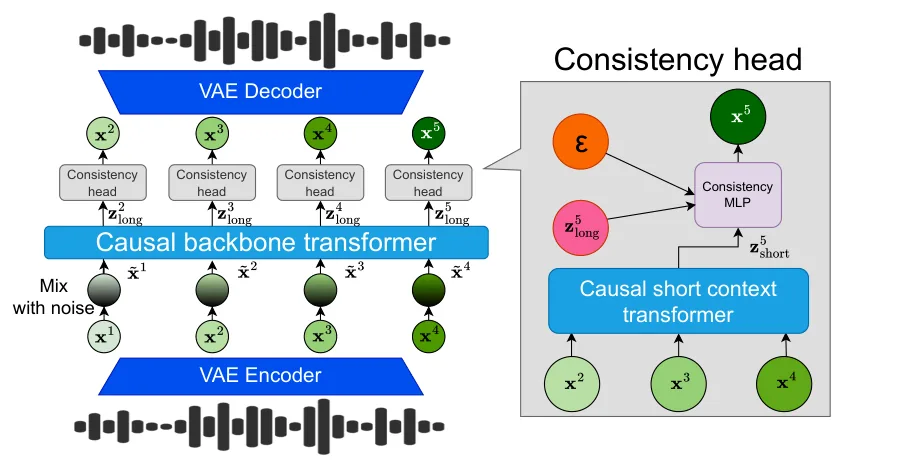
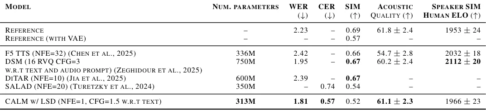
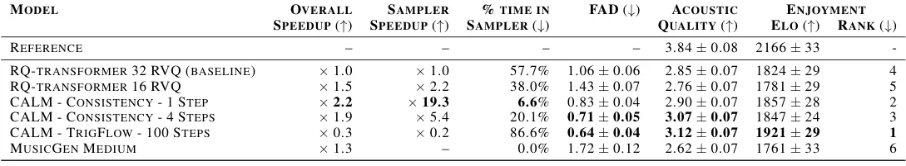
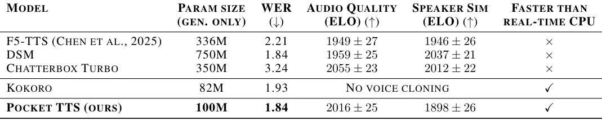

O problema da quantização em modelos de áudio
Modelos de linguagem para áudio (Audio Language Models, ALM) dominam hoje a geração de fala e música. A estratégia é simples: pegar um sinal contínuo, comprimi-lo em tokens discretos com um codec neural e treinar um Transformer autoregressivo para prever o próximo token, exatamente como se faz com texto. Funciona, mas tem um preço.
Diferente de texto, onde cada token é invertível e não perde informação, tokens de áudio vêm de codecs com perdas. Quanto melhor a qualidade desejada, mais tokens por segundo você precisa gerar. Isso cria um trade-off inevitável: fidelidade versus custo computacional. Para gerar áudio de alta qualidade, você precisa de hierarquias profundas de tokens (geralmente via Residual Vector Quantization, RVQ), e isso torna a geração cara e lenta.
O paper apresenta Continuous Audio Language Models (CALM), uma alternativa que abandona a quantização. Em vez de comprimir áudio em tokens discretos, os autores treinam um modelo autoregressivo que opera diretamente no espaço latente contínuo de um Variational Autoencoder (VAE). A promessa: áudio de melhor qualidade, gerado mais rápido e com menos parâmetros.
Por que quantização é um gargalo
Codecs neurais como SoundStream e Mimi usam RVQ para representar cada frame de áudio como uma pilha de tokens, do mais grosseiro ao mais fino. Essa hierarquia captura progressivamente mais detalhes, mas introduz perdas a cada camada. Para compensar, você aumenta a taxa de bits — mais tokens por segundo — e o modelo precisa gerar todos eles.
O problema é que tokens do mesmo frame têm dependências fortes entre si. Você não pode simplesmente gerá-los em paralelo sem perder qualidade. Técnicas como delay patterns (usadas no MusicGen) ajudam, mas não resolvem o custo fundamental: quanto mais tokens, mais passos de inferência.
VAEs tradicionais, por outro lado, não sofrem desse problema. Eles comprimem áudio em vetores contínuos, sem quantização. São mais fáceis de treinar, não têm problemas de codebook collapse e reconstroem áudio com maior fidelidade para a mesma dimensionalidade latente. A questão é: dá para treinar um modelo autoregressivo de linguagem diretamente sobre esses vetores contínuos?
A arquitetura CALM: Transformers e consistency models
CALM combina três componentes principais. Primeiro, um VAE-GAN que codifica áudio em vetores contínuos. Diferente de codecs RVQ, esse VAE usa um bottleneck gaussiano regularizado por divergência KL, sem quantização. Para fala, os autores aplicam destilação semântica com WavLM; para música, deixam isso para trabalho futuro.
Segundo, um Transformer causal que processa a sequência de vetores latentes. Aqui entra uma inovação importante: noise injection durante o treinamento. A cada passo, o modelo recebe uma versão ruidosa do vetor anterior, misturando o latente real com ruído gaussiano. Isso força o backbone a capturar estrutura de longo prazo e previne acúmulo de erro durante inferência autoregressiva.
Terceiro, uma cabeça de geração baseada em consistency models. Em vez de prever diretamente o próximo vetor ou usar difusão (que exige múltiplos passos), os autores adaptam consistency distillation: a cabeça aprende a mapear qualquer ponto ruidoso diretamente para o vetor limpo em um único passo. Isso é condicionado no contexto do Transformer, permitindo geração rápida sem sacrificar qualidade.

Dual-context: contexto longo ruidoso, contexto curto limpo
Uma decisão de design crucial: CALM usa dois Transformers. O backbone principal (T_long) vê a sequência inteira com ruído, capturando dependências de longo prazo. Mas para gerar detalhes finos do próximo frame, o modelo precisa de informação local precisa.
Por isso, um segundo Transformer menor (T_short) processa os últimos K vetores sem ruído. Esse contexto curto e limpo é concatenado com a saída do backbone longo e alimenta a cabeça de consistency. Ablations mostram que essa combinação é essencial: só ruído degrada qualidade local, só contexto limpo não generaliza bem.
A cabeça de consistency é um MLP pequeno que implementa consistency distillation. Durante treinamento, ela aprende a mapear pares (vetor ruidoso, nível de ruído) para o vetor limpo correspondente, condicionada no contexto dos Transformers. Na inferência, basta um passo: sample ruído, passe pela cabeça, obtenha o próximo frame. Opcionalmente, você pode usar Langevin Sampling Dynamics (LSD) — alguns passos de refinamento que melhoram qualidade com custo controlado.
Melhorias práticas: temperatura e batch multiplier
Os autores introduzem duas técnicas simples mas eficazes. Primeiro, temperature sampling: em vez de sempre amostrar do prior gaussiano padrão, você pode escalar a variância do ruído inicial. Temperatura mais alta (σ > 1) aumenta diversidade; mais baixa (σ < 1) torna a geração mais determinística. Isso permite controlar o trade-off exploração-exploração sem retreinar o modelo.
Segundo, head batch multiplier: durante treinamento, a cabeça de consistency vê múltiplas versões ruidosas do mesmo vetor latente no mesmo batch. Isso aumenta a eficiência do gradiente sem custo extra no backbone Transformer, que processa cada sequência uma única vez. Na prática, isso acelera convergência e melhora qualidade final.
Resultados em text-to-speech: Pocket TTS
Os autores treinam modelos de text-to-speech (TTS) em LibriSpeech e Libri-Light, comparando CALM com baselines discretos (RQ-Transformer) e contínuos (DiTAR). CALM com 1-step LSD supera todos os baselines em Word Error Rate (WER), Character Error Rate (CER) e qualidade acústica medida por similarity com ground truth.
Mais impressionante: Pocket TTS, um modelo CALM de apenas 100 milhões de parâmetros, roda mais rápido que tempo real em uma CPU de laptop. Especificamente, 1.16× real-time em um único core de CPU (Intel Xeon Gold 6430). Isso abre a porta para TTS de alta qualidade em dispositivos edge, sem necessidade de GPU.
A tabela de resultados mostra que CALM com 2-step LSD alcança WER de 2.01% e CER de 0.51% em LibriSpeech test-clean, superando o baseline RQ-Transformer (WER 2.14%) e o DiTAR (WER 2.30%). A qualidade acústica, medida por similarity, também é consistentemente melhor.

Geração de música: velocidade e qualidade
Para música, os autores treinam em um dataset interno e comparam com MusicGen (baseado em RVQ com 32 níveis). O modelo CALM com consistency head gera 30 segundos de música 2.2× mais rápido que o baseline, enquanto a cabeça de sampling sozinha é 19.3× mais rápida.
A métrica de qualidade é Fréchet Audio Distance (FAD), que mede quão próximas as distribuições de áudio gerado e real estão. CALM com 1-step consistency atinge FAD de 1.46, melhor que o baseline RQ-Transformer (1.52). Com 2-step LSD, cai para 1.42. O modelo também é avaliado em ViSQOL (Virtual Speech Quality Objective Listener), onde empata com o baseline.
Importante: esses ganhos vêm sem aumentar o tamanho do modelo. O backbone Transformer é o mesmo; a diferença está na cabeça de geração e no fato de operar em espaço contínuo. Isso sugere que o overhead da quantização — tanto em qualidade quanto em velocidade — é real e evitável.

Ablations: o que realmente importa
Os autores conduzem ablations sistemáticos para justificar cada escolha de design. Primeiro, noise injection no backbone: sem ruído, o modelo de música diverge rapidamente durante inferência autoregressiva. Com ruído, a geração é estável e de alta qualidade.
Segundo, dual-context (T_long + T_short): usar apenas contexto ruidoso degrada qualidade local; usar apenas contexto limpo não generaliza bem. A combinação é necessária. Terceiro, consistency models vs. difusão: consistency é mais rápido e atinge qualidade equivalente ou melhor com menos passos.
Finalmente, temperature sampling e head batch multiplier: ambos melhoram qualidade final. Temperatura permite controlar diversidade sem retreinar; batch multiplier acelera convergência. Esses detalhes, embora simples, fazem diferença prática.
Continuação de fala e música
Além de TTS e text-to-music, os autores testam CALM em tarefas de continuação: dado um prompt de áudio, gerar a sequência seguinte sem supervisão textual. Para fala, isso é útil em aplicações de conversação; para música, em composição assistida.
Os resultados são qualitativos (samples disponíveis online), mas os autores reportam que CALM gera continuações coerentes e de alta fidelidade em ambos os domínios. Isso demonstra que o modelo não depende de condicionamento textual para capturar estrutura temporal e semântica do áudio.
O que o paper não mostra
Primeiro, os experimentos de música usam um dataset interno não divulgado. Isso dificulta reprodução e comparação direta com outros trabalhos. Para fala, os autores usam LibriSpeech e Libri-Light, que são públicos, mas o VAE de música não é avaliado em benchmarks padrão como MusicCaps.
Segundo, não há destilação semântica para o VAE de música. Os autores mencionam isso como trabalho futuro, mas significa que o modelo de música pode não capturar estrutura semântica tão bem quanto o de fala. Terceiro, os resultados de continuação são apenas qualitativos — não há métricas objetivas reportadas.
Finalmente, o paper não compara com modelos de difusão de última geração como Stable Audio ou AudioLDM. As comparações são principalmente com baselines RVQ e com DiTAR (um trabalho anterior de difusão para TTS). Seria interessante ver como CALM se sai contra modelos de difusão de larga escala em música.

Por que isso importa
CALM demonstra que quantização não é necessária para modelagem autoregressiva de áudio. Isso é relevante porque a maioria dos modelos de áudio de última geração — MusicGen, AudioGen, Mimi — depende de RVQ. Se você pode obter qualidade superior e velocidade maior sem quantização, vale a pena repensar a arquitetura padrão.
A combinação de VAE contínuo, noise injection e consistency models é particularmente elegante. Cada componente resolve um problema específico: VAE evita perdas de quantização, ruído previne acúmulo de erro, consistency permite geração em um passo. O resultado é um sistema que é ao mesmo tempo mais simples (sem hierarquias de tokens) e mais eficiente.
Pocket TTS é um exemplo concreto do potencial: TTS de alta qualidade rodando em CPU, sem GPU. Isso abre aplicações em dispositivos móveis, assistentes offline e cenários onde latência e custo computacional são críticos. Se a abordagem escalar para modelos maiores e domínios mais complexos, pode mudar a forma como pensamos sobre geração de áudio.
Conclusão
CALM propõe uma alternativa viável aos modelos de áudio baseados em tokens discretos. Ao operar diretamente no espaço latente contínuo de um VAE e usar consistency models para geração, os autores conseguem melhor qualidade, menor custo computacional e inferência mais rápida que baselines RVQ.
Os resultados em TTS e música são promissores, e a liberação de Pocket TTS como código aberto facilita experimentação. As limitações — dataset de música não público, falta de destilação semântica para música, comparações limitadas com difusão — deixam perguntas em aberto, mas a direção é clara.
Se você trabalha com geração de áudio, vale acompanhar essa linha de pesquisa. Modelos contínuos podem ser o próximo passo natural depois da era dos codecs RVQ, especialmente para aplicações que exigem eficiência e qualidade simultâneas.
O que fica
- CALM gera áudio direto no espaço latente de um VAE, sem quantização em tokens discretos, evitando perdas de compressão e reduzindo custo computacional.
- Combinação de noise injection no Transformer e consistency models na cabeça de geração permite síntese em um passo, 2.2× mais rápida que baselines RVQ.
- Pocket TTS (100M parâmetros) roda mais rápido que tempo real em CPU, abrindo caminho para TTS de alta qualidade em dispositivos edge sem GPU.
- Experimentos em fala e música mostram qualidade superior, mas dataset de música é interno e não há comparação com modelos de difusão de larga escala.
Paper original: Continuous Audio Language Models
Comentários
Nenhum comentário ainda. Seja o primeiro.